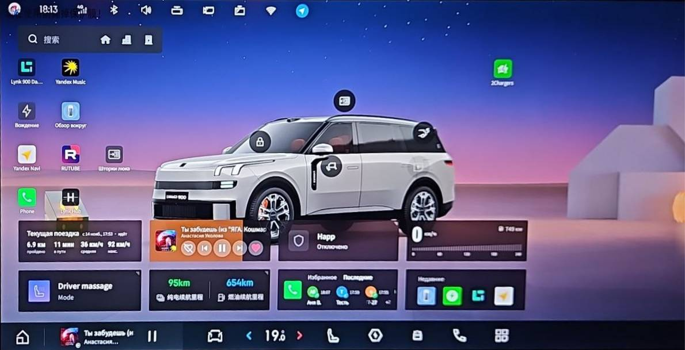
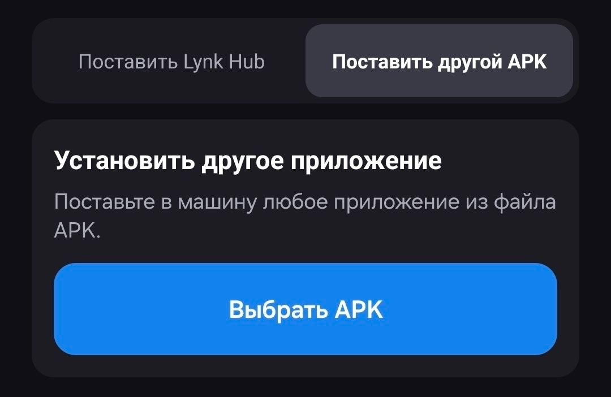
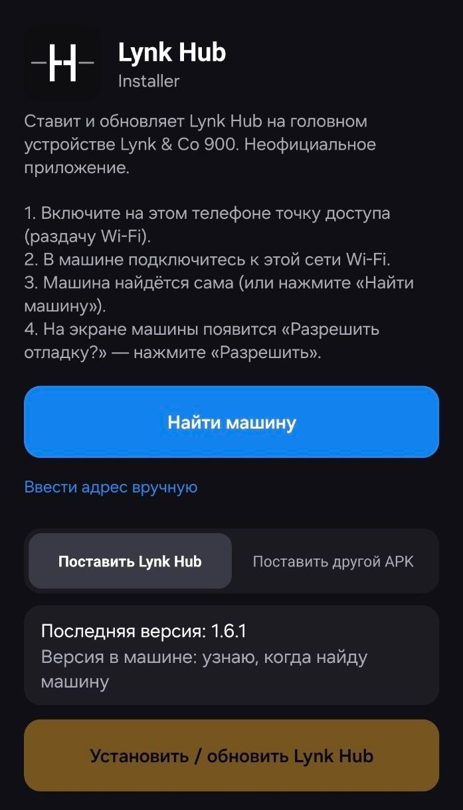

Ярлыки любых приложений и виджеты прямо на главном экране Flyme и поддержка разделённого экрана — крупно и по-русски.
Установщик работает только на телефонах с Android. С iPhone установить Lynk Hub нельзя.

Иконки любых приложений прямо на главном экране Flyme — расставьте их пальцем где удобно. Плюс быстрые кнопки к экранам машины: массаж, зеркала, шторки люка, HUD и другие — без поиска по меню.
Карточки в стиле Flyme рядом с родными: музыка из любого плеера, VPN в одно касание, спидометр, текущая поездка, недавние приложения, избранные и последние звонки. Ставятся из списка и двигаются по ряду.
Два приложения на одном экране: например, навигатор и музыка или видео. Половины ⅓ и ⅔, поменять местами или развернуть одно на весь экран — с ручки сверху.
Сам находит новые версии и ставит их на стоянке, без телефона и компьютера.
Ярлыки, сплит, спидометр, поездка, звонки и управление музыкой работают всегда.
VPN, обновлениям и отчётам об ошибках нужен интернет в машине — через её собственную связь или раздачу с телефона. Обложки треков тоже подгружаются из сети.

Установщик Lynk Hub умеет ставить в машину любой APK, не только сам Lynk Hub. На экране Flyme обычная установка приложений заблокирована, а установщик обходит это через отладку по Wi-Fi.
Откройте вкладку «Поставить другой APK», выберите файл приложения на телефоне — Навигатор, плеер, мессенджер, что угодно — и он встанет в машину. Перед установкой видно название, версию и подпись приложения.
